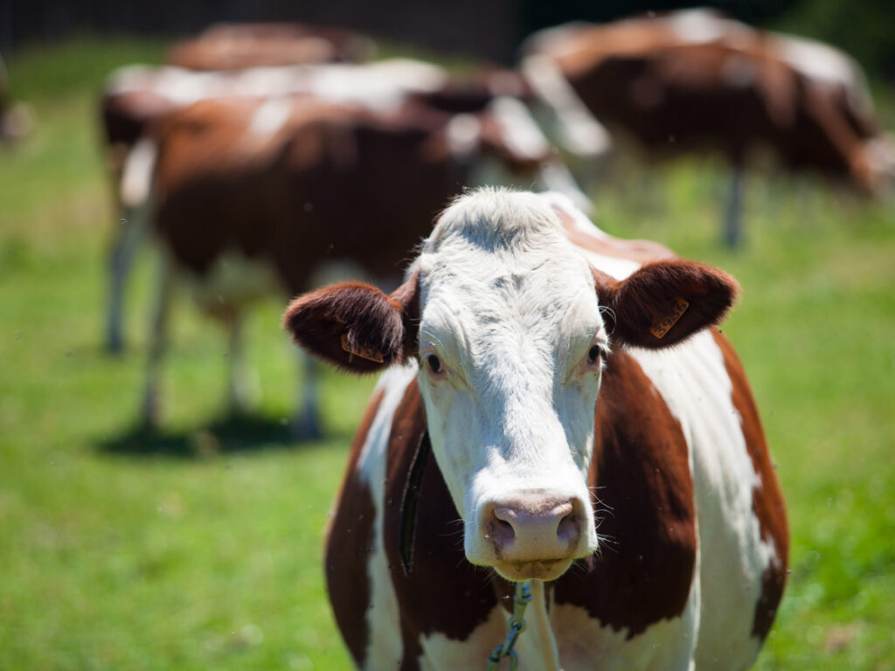

Oferecemos soluções inteligentes de monitoramento para o processo de reciclagem animal.
A reciclagem animal transforma resíduos de abate, como ossos, gordura e vísceras, em produtos reaproveitáveis, como farinha e sebo.
Nossas soluçoes visa diminuir e monitorar o desperdicio por superlotação dos armazenamentos, com isso aumentando a eficacia e o lucro da sua empresa.

Sem nossas soluções?
Vamos fechar negócio!
renderTracerX@gmail.com
renderTracerX@gmail.com
renderTracerX@gmail.com